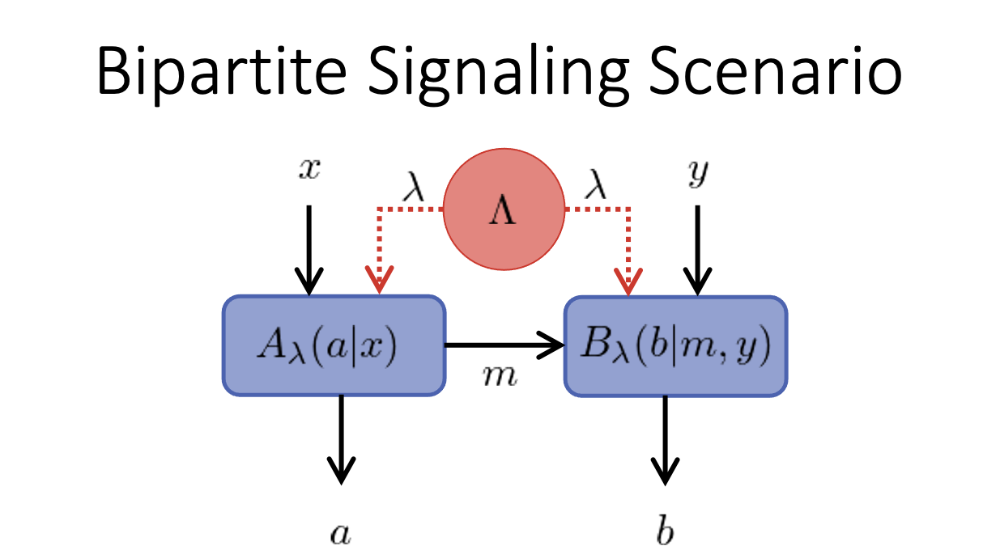

BellScenario.jl - Overview
BellScenario — ModuleTypes and constructors that represent Bell scenarios, their statistics, and their bounds.
The BellScenario.jl module is the base library for Bell scenario analysis.
Features:
Scenario: abstract type describing Bell scenarios.AbstractStrategy: abstract type for Bell scenario statistics.AbstractGame: abstract type for Bell scenario bounds.
A game theoretic framework is used to evaluate the performance of black-box systems. A cost function testing the black-box system is regarded as a game while the statistics generated by the black-box system are regarded as a strategy. A strategy is played against a game to achieve a score, hence, this framework provides a quantitative metric of the performance of a black-box system in regards to a particular task.
Black-Box Devices
A black-box device describes a physical system with inputs and outputs that an observer can test, however, the observer has no knowledge of the physical system contained within the device.

A black-box device accepts and input $x$ and produces an output $y$. No assumptions are made about how $y$ is computed from $x$. A black-box is characterized by its conditional probability distribution $S(y|x)$ which can be derived by collecting the input-output statistics of the black-box. The distribution $S(y|x)$ is a stochastic map taking input $x$ to output $y$. In BellScenario.jl, stochastic maps are referred to as strategies and outlined in greater detail in the BellScenario.jl - Strategies section.
Resources
The statistics achieved by Bell scenario depend on the resources available in the black-box system. In the context of Bell scenarios, resources describe the connection between black-boxes. Resources are typically limited and place restrictions on the black-box system.
Communication Resources:
Two (or more) black-boxes may coordinate using a limited amount of communication.
- Classical Communication - A classical state is sent from one black-box to another.
- Quantum Communication - A quantum state is sent from one black-box to another.
Communication resources are used during a Bell test. Classical communication resources are measured in dits which describes the number of distinct messages that can be sent. Quantum communication resources are measured in qudits which describes the Hilbert space dimension of the quantum state used to communicate. Quantum communication can simulate classical communication by encoding the classical messages as an orthogonal basis on the qudit Hilbert space.
Correlation Resources:
Two (or more) black-boxes may coordinate using a limited amount of correlation.
- Shared Randomness - Two or more black-boxes share a random variable $\lambda$ drawn from a sample space $\Lambda$ with probability $q(\lambda)$.
- Quantum Entanglement - Two or more black-boxes share a non-separable quantum state.
Correlation resources may be distributed before any Bell tests are run.
Diagrams
A Bell scenario is depicted by a Directed Acyclic Graph (DAG) which shows the causal flow of information through the black-box system. For example, the following figure shows a bipartite signaling scenario.

In the diagram, the information flows from inputs $x$ and $y$ to outputs $a$ and $b$. In general, a free origin of an arrow corresponds to an input of the Bell scenario while a free point of an arrow corresponds to an output of the Bell scenario. The blue rectangular nodes in the graph represent black-box devices, e.g. $A_\lambda(a|x)$ and $B_\lambda(b|m,y)$. When communication is present between two black-boxes, it is depicted by a solid arrow originating at one node and terminating at another. The red circular nodes in the graph, e.g. $\Lambda$, represent correlation resources. When a correlation resource is shared between two black-boxes, it is depicted by a red dotted arrow flowing from the correlation resource node to the each of the black-box nodes.